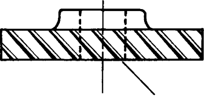
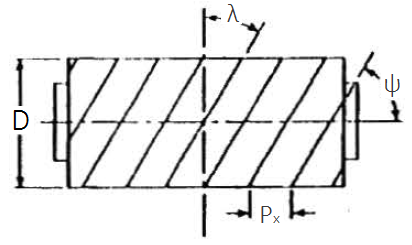

Engrenagens cilíndricas de dentes retos são a porta de entrada mais comum, mas representam apenas uma família. Quando o layout da máquina exige outra posição dos eixos ou outra característica de contato, aparecem engrenagens cônicas, helicoidais e conjuntos sem-fim.
Engrenagens cônicas
Engrenagens cônicas transmitem movimento entre eixos concorrentes, isto é, eixos cujas linhas se encontram em um ponto. O caso mais lembrado é a mudança de direção em 90 graus, mas o princípio não se limita a esse ângulo. A geometria primitiva deixa de ser cilíndrica e passa a ser cônica.
Na análise cinemática, a razão de velocidades ainda depende da geometria equivalente e dos dentes, mas a interpretação espacial fica mais exigente. É preciso observar o ângulo entre eixos e o sentido de rotação visto de uma perspectiva definida. Sem essa referência, frases como "horário" e "anti-horário" podem ficar ambíguas.
Engrenagens helicoidais
Engrenagens helicoidais têm dentes inclinados em relação ao eixo. Essa inclinação torna o contato mais gradual do que em dentes retos, o que pode reduzir ruído e melhorar suavidade. Em contrapartida, a hélice introduz componentes axiais de força, exigindo rolamentos e apoios adequados.
Quando duas helicoidais trabalham em eixos paralelos, os ângulos de hélice costumam ter sinais opostos. Em eixos reversos, a leitura muda. Por isso, o ângulo de hélice não é apenas uma anotação geométrica: ele participa da compatibilidade do engrenamento e da direção das forças.

Parafuso sem-fim e coroa
O conjunto parafuso sem-fim e coroa é usado quando se deseja grande redução em um volume compacto, geralmente entre eixos reversos. O parafuso possui um ou mais filetes, e a coroa possui dentes compatíveis. A relação ideal pode ser lida de forma simplificada como:
Um parafuso de um filete acionando uma coroa de 40 dentes, por exemplo, produz uma redução alta em um único estágio. A vantagem é evidente; a desvantagem é que o contato envolve deslizamento significativo, o que exige atenção a rendimento, aquecimento, material e lubrificação.

Sentido de rotação e perspectiva
Em engrenagens com eixos não paralelos, o sentido de rotação precisa ser descrito com cuidado. Em uma vista, a saída pode parecer horária; em outra, a mesma rotação parece anti-horária. A solução é declarar a perspectiva ou usar vetores de velocidade angular.
Esse cuidado também aparece em exemplos didáticos com engrenagens cônicas e sem-fim. Sem uma perspectiva, o resultado numérico pode estar correto, mas a indicação de sentido fica mal definida.
Critério de escolha
- Use engrenagens cônicas quando os eixos forem concorrentes e houver necessidade de mudar a direção do movimento.
- Use helicoidais quando suavidade, ruído e capacidade de carga justificarem a força axial adicional.
- Use sem-fim quando a prioridade for alta redução compacta, aceitando menor rendimento e maior exigência de lubrificação.
A melhor escolha depende menos do nome da engrenagem e mais do arranjo espacial, da carga, da rotação, da eficiência esperada e da manutenção aceitável.